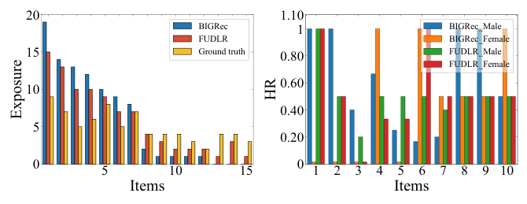

Towards Fair Large Language Model-based Recommender Systems without Costly Retraining (面向免高昂重训的公平大模型推荐系统)
- 会议/期刊: WWW 2026
- 作者与机构: Jin Li, Huilin Gu, Shoujin Wang, Qi Zhang, Shui Yu, Chen Wang, Xiwei Xu, Fang Chen（悉尼科技大学、同济大学、CSIRO Data61）
- 推荐链路定位: 端到端生成式（LLM 生成式推荐的后处理去偏）
- 研究方向: 去偏公平与工业架构 / 大语言模型推荐
- 论文原文: 论文原文链接
- 开源代码: 开源代码仓库链接
TL;DR (1分钟核心速览)
LLM-RS 会继承训练数据中的流行度偏差与用户属性偏差，而现有去偏方法要么只针对单一偏差类型（缺乏通用性），要么依赖全量重训（8B 模型不可承受）。FUDLR 把去偏重构为机器遗忘：先用一个 bias-agnostic 可学习掩码定位"致偏样本"，再用影响函数一步估计参数修正量 \(\Delta\theta\) 直接抹除其影响。在 ML1M/Games 上以 BIGRec+LLaMA3.1-8B 为骨干，Full-Ranking 下 HR@5 提升 2.6%、HD@20 降低 37.4%，而去偏耗时从 34.79h 降至 1.29h（-96.27%）。
Background & Motivation (背景与核心矛盾)
- 主流范式: LLM-RS（如 BIGRec、TALLRec）通过 LoRA 微调 LLM 做生成式推荐，将用户历史与目标物品转为自然语言 prompt 训练。
- 前人局限: ① 现有去偏方法（Reweighting、Reranking、CFP、Prompt Masking）各自绑定单一偏差类型，面对 LLM 在海量无对齐数据上涌现的新偏差或多偏差共存时失效；② 这些方法均需重训/重微调，对 8B 级 LLM 计算上不可行。
- 核心洞察 (Key Insight): 偏差并非弥散于全部数据，而是由一小撮致偏样本驱动；只要精准定位并"遗忘"这批样本，即可在不动其余参数的前提下纠正模型。
- 本文切入点: 将去偏形式化为 \(\theta^*=\theta+\Delta\theta\) 的遗忘式参数修正，用可微公平指标驱动掩码选择，用影响函数闭式估计 \(\Delta\theta\)，彻底绕开重训。

Method (核心方法设计)
1. 整体框架 (Overall Architecture)
FUDLR 分两阶段。阶段一（偏差识别）：在训练集上均匀采样 10% 构成候选集 \(\mathcal{D}_{cand}\)，为每个样本学习移除概率 \(m_k=\sigma(\omega_k)\)，以"公平提升 + 精度保持 + 稀疏性"三目标联合优化掩码 logit，取 \(\omega_k>0\) 者为致偏样本集 \(\mathcal{D}_{unlearn}\)。阶段二（遗忘去偏）：基于影响函数估计 \(\mathcal{D}_{unlearn}\) 对参数的聚合影响，一次性算出 \(\Delta\theta\) 并更新为 \(\theta^*\)，无需任何重训。推理时仍按 BIGRec 的 embedding 距离对全库物品排序。
flowchart TD
A["微调后 LLM-RS (BIGRec+LoRA)"] --> B["候选集采样 10%"]
B --> C["掩码学习: L_fair + L_acc + L_spa"]
C --> D["致偏样本集 D_unlearn (ω_k>0)"]
D --> E["影响函数估计 Δθ = (1/n)Σ H⁻¹∇L"]
E --> F["θ* = θ + Δθ → 公平且准确的推荐"]2. 关键设计拆解 (Key Designs)
-
Bias-Agnostic 掩码学习（通用性来源）：痛点是去偏方法被偏差类型锁死。FUDLR 用影响函数定义每个样本对公平指标的贡献 \(I(z_k,\mathcal{B}(\theta))=-\nabla_\theta\mathcal{B}(\theta)^\top H_\theta^{-1}\nabla_\theta\mathcal{L}_{LLM}(z_k;\theta)\)，并优化 $\(\mathcal{L}_{mask}=\lambda_{fair}\mathcal{L}_{fair}+\lambda_{acc}\mathcal{L}_{acc}+\lambda_{spa}\mathcal{L}_{spa}\)$ 其中 \(\mathcal{L}_{fair}=-\frac{1}{|\mathcal{D}_{cand}|}\sum m_k I(z_k,\mathcal{B})\)、\(\mathcal{L}_{acc}=\frac{1}{|\mathcal{D}_{cand}|}\sum m_k \mathcal{L}_{LLM}(z_k)\)、\(\mathcal{L}_{spa}=\frac{1}{|\mathcal{D}_{cand}|}\sum m_k\)。关键直觉：只需替换可微公平指标 \(\mathcal{B}(\theta)\)——流行度偏差用 \(\mathcal{B}_{pop}=\sum_i P(i|z;\theta)v_{pop}(i)\)，属性偏差用人口统计平价 \(\mathcal{B}_{attr}=|\bar{P}_{G_0}-\bar{P}_{G_1}|\)，多偏差共存用 \(\mathcal{B}_{combined}=\alpha\mathcal{B}_{pop}+(1-\alpha)\mathcal{B}_{attr}\)——算法其余部分零改动，这是"统一去偏"的物理本质。
-
影响函数一步遗忘（效率来源）：重训 \(\hat\theta=\arg\min\sum_{\mathcal{D}_{remain}}\mathcal{L}\) 不可行。Proposition 1 证明：移除 \(\mathcal{D}_{unlearn}\) 后的参数偏移可由聚合影响闭式近似 $\(\Delta\theta\approx\frac{1}{n}\sum_{z_k\in\mathcal{D}_{unlearn}}H_\theta^{-1}\nabla_\theta\mathcal{L}_{LLM}(z_k;\theta)\)$ 其本质是牛顿法一步修正，用二阶曲率 \(H^{-1}\) 把"删样本"翻译成"沿损失梯度反向走一步"。附录 E 验证其与真实重训结果差距可忽略。
-
训练目标、负采样与推理效率：总目标即上述 \(\mathcal{L}_{mask}\)；训练沿用 BIGRec 的生成式下一物品预测损失，无额外负采样设计（排序靠 embedding 距离全库比较）。效率上三重加速：① 仅对 LoRA 最后一层适配器做影响估计，参数量极小；② 用 HVP（Hessian-vector product）避免显式构造/求逆 Hessian；③ 影响分数预计算一次复用。总复杂度 \(O((n_c+T_{cg})\cdot F)\) 与 \(O((n_u+T_{cg})\cdot F)\)，因 \(n_u\ll n\) 远低于重训的 \(O(n\cdot E\cdot F)\)。
Experimental Setup & Evaluation Protocol (实验设置与评估协议)
- 数据集与预处理: 沿用 BIGRec 预处理，按时间戳切 10 段防泄漏，8:1:1 划分，训练采样 65,536、测试 5,000 条（保持原分布）。
| 数据集 | #Users | #Items | #Interactions | 稀疏度/密度 | 特征/场景说明 |
|---|---|---|---|---|---|
| ML1M | ~6.0k | ~3.7k | ~1M | 长尾分布 | 电影，含性别等人口属性，测流行度+属性偏差 |
| Games | — | — | Amazon 子集 | 长尾 | 视频游戏评论，测流行度偏差 |
- 数据划分与防穿越 (Splitting Strategy): 全局时间戳切分（10 段）+ 8:1:1 比例划分，测试集为末段。
- 排名评测协议 (Ranking Protocol): Full-Ranking 全库排序（按生成 embedding 与候选物品距离排序），非采样排序。
- 对比基线与超参设置: 流行度去偏基线 Reweighting / Reranking / RWRR；属性去偏基线 CFP / Prompt Masking。骨干 BIGRec + LLaMA 3.1 8B，LoRA 微调；\(\lambda_{fair},\lambda_{acc},\lambda_{spa}\in\{10^i\}_{i=-3}^{2}\) 网格搜索，Adam lr=\(10^{-3}\)；\(p<0.05\) 显著性检验。
Key Experimental Results (实验关键数据)
1. 主实验对比 (Main Results)
流行度去偏（ML1M，K=5）：
| 方法 | HR↑ | NDCG↑ | ARP↑ | APT↑ | \(F_{pop}\)↑ | Time(h)↓ |
|---|---|---|---|---|---|---|
| BIGRec | 0.0220 | 0.0167 | 5.0237 | 0.3256 | 0.1644 | 34.79 |
| Reweighting | 0.0180 | 0.0131 | 5.4806 | 0.4529 | 0.1502 | 40.95 |
| Reranking | 0.0102 | 0.0080 | 4.8443 | 0.4082 | 0.0907 | 1.12 |
| RWRR | 0.0084 | 0.0060 | 5.2571 | 0.5013 | 0.0775 | 41.60 |
| FUDLR | 0.0226* | 0.0172* | 5.0310 | 0.3278 | 0.1681* | 1.29 |
| Improv.% | +2.65 | +2.63 | +0.14 | +0.67 | +2.15 | -96.27 |
属性去偏（ML1M，Implicit，K=20）：
| 方法 | HR↑ | NDCG↑ | HD↓ | DP↓ | \(F_{attr}\)↑ | Time(h)↓ |
|---|---|---|---|---|---|---|
| BIGRec | 0.0336 | 0.0200 | 0.0093 | 0.0974 | 0.2833 | 34.79 |
| CFP | 0.0316 | 0.0184 | 0.0124 | 0.1198 | 0.2679 | 58.88 |
| FUDLR | 0.0340* | 0.0206* | 0.0058* | 0.0961* | 0.2862* | 1.54 |
| Improv.% | +1.19 | +3.29 | -37.36 | -1.32 | +1.02 | -95.57 |
多偏差共存（ML1M，K=5）：FUDLR 相对 BIGRec 的 HR +4.55%、NDCG +5.60%、\(F_{pop}\) +3.42%、\(F_{attr}\) +4.03%，耗时 34.79h→1.55h（-95.53%）。
2. 消融实验 (Ablation Study)
| 变体 (Fair/Acc/Sparse) | HR@5 | HR@20 | APT@5 | APT@20 | \(F_{pop}\)@5 | \(F_{pop}\)@20 |
|---|---|---|---|---|---|---|
| ✓ / - / - | 0.0184 | 0.0312 | 0.3698 | 0.2641 | 0.1473 | 0.1961 |
| - / ✓ / - | 0.0204 | 0.0332 | 0.2818 | 0.2247 | 0.1498 | 0.1910 |
| - / - / ✓ | 0.0220 | 0.0336 | 0.3256 | 0.2476 | 0.1644 | 0.2002 |
| ✓ / ✓ / - | 0.0202 | 0.0336 | 0.2854 | 0.2276 | 0.1492 | 0.1933 |
| ✓ / ✓ / ✓ (全模型) | 0.0226 | 0.0340 | 0.3278 | 0.2486 | 0.1681 | 0.2019 |
3. 关键实验发现 (Key Findings)
- 公平与精度并非零和：仅 Fair 目标虽把 APT@5 推到 0.3698，却使 HR@5 从 0.0220 跌至 0.0184（-16.4%）；而三目标全模型同时取得最高 HR（0.0226）与最高 \(F_{pop}\)（0.1681），说明稀疏化+精度约束让"遗忘"只删真正致偏的样本，而非误伤有效交互。
- 效率是压倒性优势：FUDLR 去偏耗时 1.29h，比骨干重训快 96.27%、比 RWRR 快约 32 倍；Reranking 虽快 0.17h，但作为后处理使 HR@5 暴跌 53.6%，无法兼顾精度。
- 通用性经多偏差验证：同一套掩码机制仅替换 \(\mathcal{B}\) 即在流行度（HD@20 -37.36%）、属性、以及二者共存（\(F_{pop}\)+3.42%、\(F_{attr}\)+4.03%）三种场景全部正向，证明 bias-agnostic 设计确实可迁移。
Highlights, Limitations & Rating (亮点、对比与审稿评价)
- 与代表作对比 (vs. Prior Work): 相比 Reweighting/RWRR（需重训且精度崩塌）、Reranking（后处理牺牲精度）、CFP（对抗训练需重微调且隐式场景失效），FUDLR 首次把 LLM-RS 去偏统一为免重训的遗忘问题，在精度、公平、效率三角上同时占优。
- 可迁移亮点: ① "可微公平指标 + 掩码选择 + 影响函数修正"的范式可迁移到任何需要定向删除训练数据影响的推荐场景（如投毒样本清除、隐私遗忘）；② 仅对 LoRA 末层做 HVP 影响估计，是 8B 级模型上做数据归因的实用工程技巧。
- 审稿级局限批判: ① 影响估计依赖 Hessian 近似与 LoRA 低秩假设，对全参数微调或更深层偏差的适用性未验证；② 公平指标需可微且需人工指定 \(\mathcal{B}\)，对"未知新兴偏差"仍需先定义度量，且 \(\lambda\) 三参数网格搜索对部署有调参成本；③ 实验仅两个数据集、单一骨干（BIGRec+LLaMA3.1-8B），泛化证据偏薄。
- 四维评分: 创新性 ⭐⭐⭐⭐ | 实验扎实度 ⭐⭐⭐⭐ | 方法清晰度 ⭐⭐⭐⭐⭐ | 落地价值 ⭐⭐⭐⭐⭐